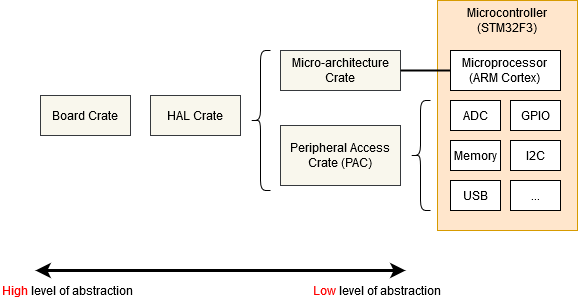

ثباتهای نگاشتشده به حافظه
سیستمهای توکار با اجرای کد معمولی Rust و جابهجا کردن داده در RAM فقط تا حدی پیش میروند. اگر بخواهیم هر اطلاعاتی را به سیستم خود وارد کنیم یا از آن خارج کنیم (چه چشمک زدن یک LED، چه تشخیص فشردن یک دکمه، یا ارتباط با یک دستگاه جانبی خارج از تراشه روی نوعی گذرگاه)، باید وارد دنیای دستگاههای جانبی (Peripherals) و «ثباتهای نگاشتشده به حافظه» (memory mapped registers) شویم.
ممکن است ببینید کدی که برای دسترسی به دستگاههای جانبی میکروکنترلر خود لازم دارید، پیشتر در یکی از سطوح زیر نوشته شده است:

- crate ریزمعماری (Micro-architecture Crate) - این نوع crate هر روال مفیدی را که میان هستهٔ پردازندهای که میکروکنترلر شما به کار میبرد مشترک است پوشش میدهد، و همچنین هر دستگاه جانبی را که میان همهٔ میکروکنترلرهای دارای آن نوع خاص از هستهٔ پردازنده مشترک است. برای نمونه، crate با نام cortex-m تابعهایی برای فعال و غیرفعال کردن وقفهها در اختیار شما میگذارد که برای همهٔ میکروکنترلرهای مبتنی بر Cortex-M یکسان است. همچنین به دستگاه جانبی «SysTick» که در همهٔ میکروکنترلرهای مبتنی بر Cortex-M هست دسترسی میدهد.
- crate دسترسی به دستگاه جانبی (Peripheral Access Crate یا PAC) - این نوع crate یک پوشش نازک روی ثباتهای نگاشتشده به حافظهای است که برای شمارهٔ قطعهٔ خاص میکروکنترلر شما تعریف شدهاند. برای نمونه، tm4c123x برای سری Texas Instruments Tiva-C TM4C123، یا stm32f30x برای سری ST-Micro STM32F30x. در اینجا مستقیماً با ثباتها تعامل میکنید و دستورالعمل کار هر دستگاه جانبی را که در راهنمای مرجع فنی (Technical Reference Manual) میکروکنترلر شما آمده است دنبال میکنید.
- crate با نام HAL - این crateها رابط برنامهنویسی (API) کاربرپسندتری برای پردازندهٔ خاص شما ارائه میدهند، اغلب با پیادهسازی چند صفت مشترک که در embedded-hal تعریف شدهاند. برای مثال، چنین crateای ممکن است یک ساختار
Serialارائه دهد، با یک سازنده که مجموعهٔ مناسبی از پایههای GPIO و یک نرخ baud میگیرد، و نوعی تابعwrite_byteبرای ارسال داده عرضه کند. برای اطلاعات بیشتر دربارهٔ embedded-hal فصل قابلیت حمل را ببینید. - crate برد (Board Crate) - این crateها با پیکربندی از پیش انجامشدهٔ دستگاههای جانبی و پایههای GPIO متناسب با کیت توسعه یا بردی که به کار میبرید، یک گام از crate با نام HAL فراتر میروند؛ مانند stm32f3-discovery برای برد STM32F3DISCOVERY.
crate برد
اگر با Rust توکار تازهکارید، crate برد نقطهٔ شروع بینقصی است. جزئیات سختافزاری را که ممکن است هنگام شروع مطالعهٔ این موضوع طاقتفرسا باشد بهخوبی انتزاع میکند و کارهای استاندارد، مثل روشن یا خاموش کردن یک LED، را آسان میکند. قابلیتهایی که در اختیار میگذارد از بردی به برد دیگر بسیار فرق میکند. چون هدف این کتاب مستقل ماندن از سختافزار است، crateهای برد در این کتاب پوشش داده نمیشوند.
اگر میخواهید با برد STM32F3DISCOVERY آزمایش کنید، بهشدت توصیه میشود نگاهی به crate برد stm32f3-discovery بیندازید که قابلیت چشمک زدن LEDهای برد، دسترسی به قطبنما، بلوتوث و موارد دیگر را فراهم میکند. کتاب Discovery مقدمهٔ بسیار خوبی بر استفاده از crate برد ارائه میدهد.
اما اگر روی سیستمی کار میکنید که هنوز crate برد اختصاصی ندارد، یا به قابلیتی نیاز دارید که crateهای موجود فراهم نمیکنند، ادامه را بخوانید؛ از پایین شروع میکنیم، یعنی crateهای ریزمعماری.
crate ریزمعماری
نگاهی به دستگاه جانبی SysTick بیندازیم که میان همهٔ میکروکنترلرهای مبتنی بر Cortex-M مشترک است. یک API نسبتاً سطحپایین در crate با نام cortex-m پیدا میکنیم و میتوانیم آن را اینگونه به کار ببریم:
#![no_std]
#![no_main]
use cortex_m::peripheral::{syst, Peripherals};
use cortex_m_rt::entry;
use panic_halt as _;
#[entry]
fn main() -> ! {
let peripherals = Peripherals::take().unwrap();
let mut systick = peripherals.SYST;
systick.set_clock_source(syst::SystClkSource::Core);
systick.set_reload(1_000);
systick.clear_current();
systick.enable_counter();
while !systick.has_wrapped() {
// Loop
}
loop {}
}تابعهای ساختار SYST تقریباً دقیقاً با قابلیتهایی که ARM Technical Reference Manual برای این دستگاه جانبی تعریف کرده است متناظرند. در این API چیزی دربارهٔ «تأخیر X میلیثانیهای» نیست - باید آن را خودمان با یک حلقهٔ while و به شکلی ابتدایی پیادهسازی کنیم. توجه کنید که تا Peripherals::take() را فراخوانی نکرده باشیم، به ساختار SYST دسترسی نداریم - این یک روال ویژه است که تضمین میکند در کل برنامهٔ ما فقط یک ساختار SYST وجود دارد. برای اطلاعات بیشتر در این باره، بخش دستگاههای جانبی را ببینید.
استفاده از crate دسترسی به دستگاه جانبی (PAC)
اگر توسعهٔ نرمافزار توکار خود را فقط به دستگاههای جانبی پایهای که در هر Cortex-M هست محدود کنیم، چندان پیش نمیرویم. در نقطهای باید کدی بنویسیم که مختص میکروکنترلر خاصی باشد که به کار میبریم. در این مثال فرض کنیم یک Texas Instruments TM4C123 داریم - یک Cortex-M4 متوسط با 80MHz و 256 KiB حافظهٔ Flash. برای استفاده از این تراشه، crate با نام tm4c123x را وارد میکنیم.
#![no_std]
#![no_main]
use panic_halt as _; // panic handler
use cortex_m_rt::entry;
use tm4c123x;
#[entry]
pub fn init() -> (Delay, Leds) {
let cp = cortex_m::Peripherals::take().unwrap();
let p = tm4c123x::Peripherals::take().unwrap();
let pwm = p.PWM0;
pwm.ctl.write(|w| w.globalsync0().clear_bit());
// Mode = 1 => Count up/down mode
pwm._2_ctl.write(|w| w.enable().set_bit().mode().set_bit());
pwm._2_gena.write(|w| w.actcmpau().zero().actcmpad().one());
// 528 cycles (264 up and down) = 4 loops per video line (2112 cycles)
pwm._2_load.write(|w| unsafe { w.load().bits(263) });
pwm._2_cmpa.write(|w| unsafe { w.compa().bits(64) });
pwm.enable.write(|w| w.pwm4en().set_bit());
}
به دستگاه جانبی PWM0 دقیقاً به همان شیوهای دسترسی پیدا کردهایم که پیشتر به دستگاه جانبی SYST دسترسی پیدا کردیم، با این تفاوت که tm4c123x::Peripherals::take() را فراخوانی کردیم. چون این crate با svd2rust بهطور خودکار تولید شده است، تابعهای دسترسی به فیلدهای ثبات ما بهجای آرگومان عددی یک closure میگیرند. هرچند این کد زیاد به نظر میرسد، کامپایلر Rust میتواند از آن برای انجام یک سلسله بررسی برای ما استفاده کند و سپس کد ماشینی تولید کند که بسیار به اسمبلر دستنویس نزدیک است! جایی که کد تولیدشده بهطور خودکار نمیتواند تشخیص دهد همهٔ آرگومانهای ممکن برای یک تابع دسترسی معتبرند (برای مثال، اگر SVD ثبات را 32 بیتی تعریف کرده باشد اما نگفته باشد که برخی از آن مقادیر 32 بیتی معنای ویژهای دارند)، آن تابع بهعنوان unsafe علامتگذاری میشود. این را در مثال بالا هنگام تنظیم زیرفیلدهای load و compa با تابع bits() میبینیم.
خواندن
تابع read() شیئی برمیگرداند که دسترسی فقطخواندنی به زیرفیلدهای گوناگون این ثبات را فراهم میکند، همانطور که فایل SVD سازندهٔ این تراشه تعریف کرده است. همهٔ تابعهایی را که روی نوع بازگشتی ویژهٔ R برای این ثبات خاص، در این دستگاه جانبی خاص، روی این تراشهٔ خاص در دسترساند، در مستندات tm4c123x پیدا میکنید.
if pwm.ctl.read().globalsync0().is_set() {
// Do a thing
}نوشتن
تابع write() یک closure با یک آرگومان میگیرد. معمولاً آن را w مینامیم. این آرگومان دسترسی خواندنی-نوشتنی به زیرفیلدهای گوناگون این ثبات را فراهم میکند، همانطور که فایل SVD سازندهٔ این تراشه تعریف کرده است. باز هم میتوانید همهٔ تابعهایی را که روی ‘w’ برای این ثبات خاص، در این دستگاه جانبی خاص، روی این تراشهٔ خاص در دسترساند، در مستندات tm4c123x پیدا کنید. توجه کنید که همهٔ زیرفیلدهایی که ما تنظیم نمیکنیم برایمان روی یک مقدار پیشفرض تنظیم میشوند - هر محتوای موجود در ثبات از دست میرود.
pwm.ctl.write(|w| w.globalsync0().clear_bit());تغییر دادن
اگر بخواهیم فقط یک زیرفیلد مشخص در این ثبات را تغییر دهیم و زیرفیلدهای دیگر را دستنخورده بگذاریم، میتوانیم از تابع modify استفاده کنیم. این تابع یک closure با دو آرگومان میگیرد - یکی برای خواندن و یکی برای نوشتن. معمولاً این دو را بهترتیب r و w مینامیم. آرگومان r را میتوان برای بررسی محتوای فعلی ثبات به کار برد، و آرگومان w را برای تغییر محتوای ثبات.
pwm.ctl.modify(|r, w| w.globalsync0().clear_bit());تابع modify اینجا قدرت closureها را واقعاً نشان میدهد. در C باید در یک مقدار موقت میخواندیم، بیتهای درست را تغییر میدادیم و سپس مقدار را دوباره مینوشتیم. این یعنی جای قابلتوجهی برای خطا هست:
uint32_t temp = pwm0.ctl.read();
temp |= PWM0_CTL_GLOBALSYNC0;
pwm0.ctl.write(temp);
uint32_t temp2 = pwm0.enable.read();
temp2 |= PWM0_ENABLE_PWM4EN;
pwm0.enable.write(temp); // Uh oh! Wrong variable!
استفاده از crate با نام HAL
crate با نام HAL برای یک تراشه معمولاً با پیادهسازی یک صفت (Trait) سفارشی برای ساختارهای خامی که PAC در اختیار میگذارد کار میکند. اغلب این صفت تابعی به نام constrain() برای دستگاههای جانبی تکی، یا split() برای مواردی مثل درگاههای GPIO با چند پایه، تعریف میکند. این تابع ساختار خام دستگاه جانبی زیربنایی را مصرف میکند و شیء جدیدی با API سطح بالاتر برمیگرداند. این API ممکن است کارهایی هم بکند، مثلاً تابع new درگاه Serial را ملزم کند که یک ساختار Clock را قرض بگیرد، ساختاری که فقط با فراخوانی تابعی تولید میشود که PLLها را پیکربندی میکند و همهٔ فرکانسهای ساعت را تنظیم میکند. به این ترتیب، ساختن یک شیء درگاه Serial بدون پیکربندی قبلی نرخهای ساعت، یا اشتباه تبدیل کردن نرخ baud به تیکهای ساعت توسط شیء درگاه Serial، از نظر ایستا غیرممکن است. بعضی crateها حتی صفتهای ویژهای برای حالتهایی که هر پایهٔ GPIO میتواند داشته باشد تعریف میکنند و کاربر را ملزم میکنند پیش از دادن پایه به Peripheral آن را در حالت درست قرار دهد (مثلاً با انتخاب حالت Alternate Function مناسب). همهٔ اینها بدون هیچ هزینهٔ زمان اجرا!
بیایید یک مثال ببینیم:
#![no_std]
#![no_main]
use panic_halt as _; // panic handler
use cortex_m_rt::entry;
use tm4c123x_hal as hal;
use tm4c123x_hal::prelude::*;
use tm4c123x_hal::serial::{NewlineMode, Serial};
use tm4c123x_hal::sysctl;
#[entry]
fn main() -> ! {
let p = hal::Peripherals::take().unwrap();
let cp = hal::CorePeripherals::take().unwrap();
// Wrap up the SYSCTL struct into an object with a higher-layer API
let mut sc = p.SYSCTL.constrain();
// Pick our oscillation settings
sc.clock_setup.oscillator = sysctl::Oscillator::Main(
sysctl::CrystalFrequency::_16mhz,
sysctl::SystemClock::UsePll(sysctl::PllOutputFrequency::_80_00mhz),
);
// Configure the PLL with those settings
let clocks = sc.clock_setup.freeze();
// Wrap up the GPIO_PORTA struct into an object with a higher-layer API.
// Note it needs to borrow `sc.power_control` so it can power up the GPIO
// peripheral automatically.
let mut porta = p.GPIO_PORTA.split(&sc.power_control);
// Activate the UART.
let uart = Serial::uart0(
p.UART0,
// The transmit pin
porta
.pa1
.into_af_push_pull::<hal::gpio::AF1>(&mut porta.control),
// The receive pin
porta
.pa0
.into_af_push_pull::<hal::gpio::AF1>(&mut porta.control),
// No RTS or CTS required
(),
(),
// The baud rate
115200_u32.bps(),
// Output handling
NewlineMode::SwapLFtoCRLF,
// We need the clock rates to calculate the baud rate divisors
&clocks,
// We need this to power up the UART peripheral
&sc.power_control,
);
loop {
writeln!(uart, "Hello, World!\r\n").unwrap();
}
}